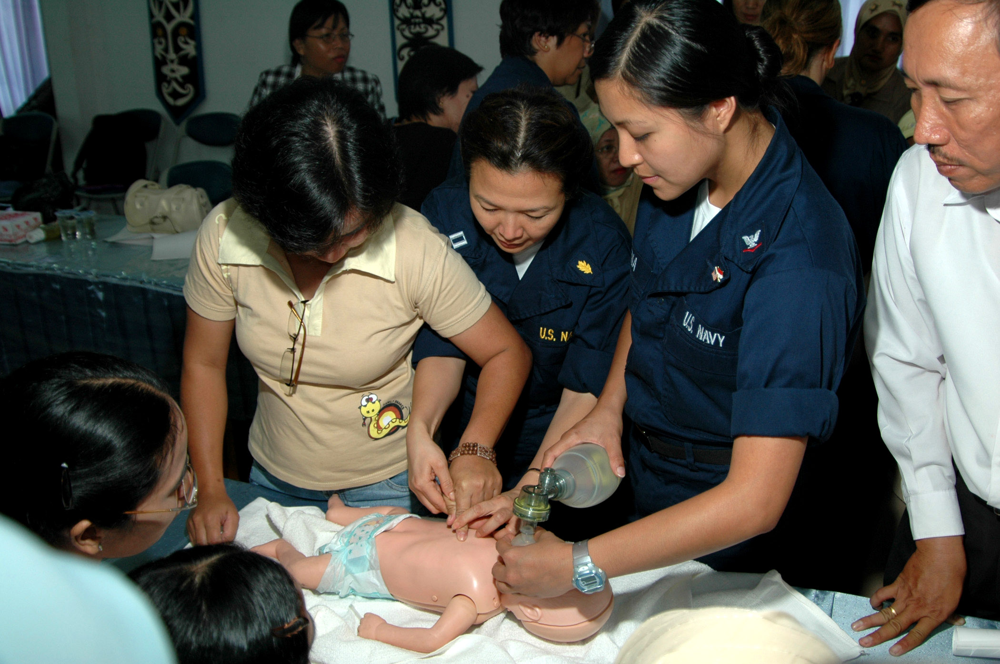
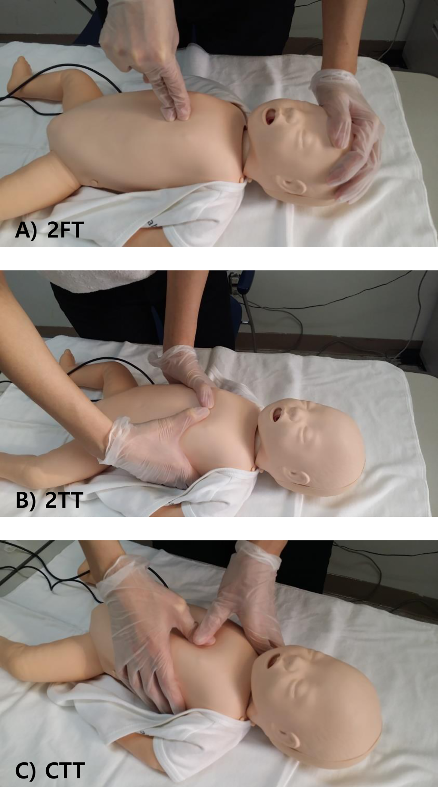
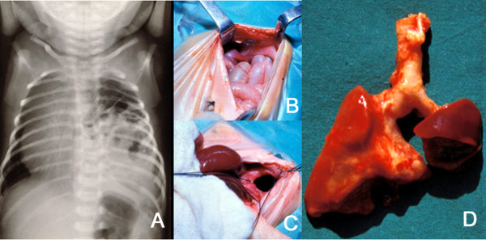

Você se lembra dele. Filho da Florinda Rosa. 36 semanas e 4 dias. 1900 gramas. PIG. Mãe com sífilis mal-tratada — uma dose de benzatina pra duração ignorada, história que já foi elucidada antes na Parte 1. Mas antes da sífilis, antes do líquor com 40 células e 160 de proteína, antes da cristalina por 10 dias — antes de qualquer coisa, João Eucalipto teve um problema mais grave e mais precoce: ele nasceu hipotônico, em apneia.
Ele precisou ser atendido na hora. Precisou de reanimação neonatal na sala de parto, com cronômetro, com mesa preparada, com mãos coordenadas. E o que acontece nesses primeiros segundos define o resto da vida de João Eucalipto — mais do que o tratamento da sífilis, mais do que o seguimento ambulatorial, mais do que qualquer coisa que venha depois.
É por isso que reanimação neonatal aparece aqui como tema central. E é por isso que cai tanto em prova: porque é sistemático, tem ordem rigorosa, e cada etapa tem critério de entrada e critério de saída.
A reanimação neonatal não é um conjunto de manobras heroicas. É um protocolo. Quem entende a lógica sequencial dos passos resolve grande parte das questões de prova sobre o tema, porque a banca cobra justamente a ordem, os critérios e as exceções — não improvisação. O algoritmo é estável, brasileiro (PRN-SBP), alinhado ao internacional (ILCOR/NRP) e atualizado em 2022.
Por que isso importa pra prova? Porque cada bifurcação do fluxograma tem uma armadilha. "Bom tônus" é tônus FLEXOR — não tônus genérico. "FC <60" não dispara MCE de imediato — primeiro segue todo o fluxograma. "Banhado em mecônio" não significa aspirar todo bebê — significa aspirar apenas se uma condição específica aparecer durante a checagem de técnica da VPP. Cada uma dessas pegadinhas tem um item de prova esperando você cair.
Por que importa pra prática? Porque a janela é minúscula. ASPAS tem 30 segundos. A primeira reavaliação de FC vem aos 30 segundos seguintes. A indicação de epinefrina vem 1 minuto depois do início da MCE. Quem chega na sala de parto sem saber a ordem improvisa — e improviso em RN custa caro.
João Eucalipto nasceu hipotônico em apneia. No semáforo da reanimação, isso é cenário vermelho — clampeamento imediato, mesa de reanimação direto. O que aconteceu com ele só faz sentido depois de percorrer todo o algoritmo. O fechamento do módulo retoma o caso aplicando cada etapa do fluxograma. Por enquanto, basta saber: ele estava em apneia. Por isso o tema existe.
Quiz — fixação
Questão 1 — MCQ
Qual o motivo principal pelo qual reanimação neonatal cai sistematicamente em prova de residência?
Gabarito: B. O conteúdo é cobrado justamente por ter ordem inviolável e critérios objetivos — a banca cobra ordem e critério, não improvisação.
A farmacoterapia neonatal é estável e o ponto cobrado é critério de indicação, não escolha de droga (A). Improviso em RN é o oposto do que se espera — o protocolo existe pra eliminar improviso (D).
Questão 2 — V ou F
"Boa vitalidade" do RN ao nascer significa apenas que ele respirou ou chorou.
Gabarito: FALSO. Boa vitalidade exige dois critérios — respirou/chorou E bom tônus em flexão. Falta qualquer um → má vitalidade.
A página 3.2 detalha as 3 perguntas e por que a respiração isolada é insuficiente.
A seguir: as 3 perguntas que decidem o destino imediato de qualquer RN — incluindo João Eucalipto.
3.2 / 12E1 · Pergunta centralItens 005-014
As 3 perguntas iniciais: o que decide o destino do RN ao nascer
Por que três perguntas, e por que ESSAS três? O que cada uma delas elimina da decisão clínica?
Quando o RN sai do útero, a primeira coisa que se faz não é tocar nele, ouvir o coração, contar a frequência respiratória. Antes de qualquer manobra, três perguntas. As respostas a essas três perguntas decidem duas coisas práticas imediatas: quando clampear o cordão e pra onde mandar o bebê em seguida (colo da mãe ou mesa de reanimação).
Pergunta 1 — IG ≥ 34 semanas?
Bebê com menos de 34 semanas é fisicamente frágil. Perde calor com facilidade, tem risco de hipotermia, tem risco de complicações respiratórias. Mesmo nascendo bem, vai precisar de cuidado adicional. Por isso a IG entra na primeira pergunta — não pra excluir o bebê pré-termo da reanimação, mas pra mudar o caminho dele dentro do algoritmo.
Pergunta 2 — Respirou ou chorou?
Respiração efetiva e choro são sinais imediatos de adaptação extrauterina. Pulmão expandido, troca gasosa iniciada, drive respiratório funcionando. Bebê que não respira ou não chora ao nascer não fez essa transição — e precisa de ajuda agora, não daqui a um minuto.
Pergunta 3 — Bom tônus?
Aqui mora a primeira pegadinha clássica de prova. "Bom tônus" significa, especificamente, tônus em flexão — bracinhos e perninhas em flexão, postura de RN saudável. Não é tônus "genérico". Não é "criança que mexe". É flexor. RN molenga, com membros estendidos e hipotônicos, está em má vitalidade.
As duas últimas perguntas — respirou/chorou e bom tônus — são mais fundamentais que a primeira pra definir vitalidade. Idade gestacional muda o caminho do algoritmo, mas é respiração + tônus que classificam o bebê como "boa vitalidade" ou "má vitalidade".
Síntese operacional
Boa vitalidade = RN respirou OU chorou ao nascer E está com bom tônus flexor (os dois critérios juntos).
Má vitalidade = alteração em qualquer um dos dois critérios (não respirou/chorou OU sem bom tônus).
Quiz — fixação
Questão 1 — MCQ
RN nasce com 35 semanas, chora vigorosamente, está com bracinhos estendidos e perninhas estendidas. Qual a vitalidade?
Gabarito: C. Respirou/chorou ✓, mas tônus não está em flexão → má vitalidade.
A armadilha clássica (A): fixar só no choro e ignorar tônus. B confunde com o corte antigo PRN 2016 (Termo? ≥37 sem). D confunde IG (que define caminho) com vitalidade (que exige respiração + tônus).
Questão 2 — MCQ
As 3 perguntas iniciais ao nascer são, na ordem do PRN-SBP 2022:
Gabarito: B. Ordem canônica PRN-SBP 2022 — IG (≥34 sem), depois respiração, depois tônus.
A é a versão pré-2016. C interpola Apgar — Apgar não entra nas 3 perguntas iniciais. D inverte a ordem.
A seguir: as combinações entre IG e vitalidade geram 3 cenários distintos com 3 tempos de clampeamento e 2 destinos possíveis.
3.3 / 12E4 · PegadinhaItens 015-032
Semáforo da reanimação: verde, amarelo, vermelho — e os 3 tempos de clampeamento
As 3 perguntas iniciais não são exercício acadêmico. Elas geram duas decisões práticas imediatas: quando clampear o cordão e pra onde levar o RN. As respostas combinadas (IG ≥34? Boa vitalidade?) produzem três cenários, e cada um tem uma cor, um tempo e um destino.
RN com IG ≥34 sem E boa vitalidade (respirou/chorou + bom tônus flexor)
Clampeamento
Tardio — acima de 60 segundos após o nascimento (podendo ir até cessar pulsação do cordão segundo PRN-SBP 2022)
Destino
Contato pele a pele com a mãe, amamentação na primeira hora
Voz autoral: "vida que segue" — sem mesa, sem intervenção adicional, cenário ideal.
!Cenário AMARELO — mesa de reanimação porém estável
Quem entra
RN com IG <34 semE boa vitalidade
Clampeamento
Intermediário — acima de 30 segundos (não 60, porque é pré-termo e a janela de manobra é menor)
Destino
Mesa de reanimação, pelo menos pra passos iniciais — não vai direto pro colo da mãe
Lógica: o bebê pode estar bem agora, mas é frágil (hipotermia, risco respiratório) — vale o cuidado adicional.
×Cenário VERMELHO — sem tempo a perder
Quem entra
RN com má vitalidade, independente da IG
Clampeamento
Imediato (sem tempo a perder; circulação placentária interrompida pra agir)
Destino
Mesa de reanimação direto
Detalhe operacional: o obstetra pode fazer 2 estímulos no dorso da criança com má vitalidade pra tentar uma reação imediata — mas o cordão é clampeado de qualquer jeito. Sem demora.
Os 3 tempos de clampeamento — não confunda
Esta é uma das pegadinhas mais cobradas. Três cenários, três cortes diferentes:
Cenário
Critério
Clampeamento
Destino
Verde
≥34 sem + boa vitalidade
≥60 segundos
Mãe (pele a pele)
Amarelo
<34 sem + boa vitalidade
≥30 segundos
Mesa de reanimação
Vermelho
Má vitalidade (qualquer IG)
Imediato
Mesa de reanimação
Tônus flácido = bebê molenga — linguagem coloquial pra fixar a imagem do RN em má vitalidade.
Quiz — fixação
Questão 1 — MCQ
RN de 39 semanas nasce hipotônico, em apneia. Conduta imediata correta?
Gabarito: C. Má vitalidade (apneia + hipotonia) define cenário vermelho independente da IG. A IG ≥34 sem não salva do vermelho.
A é a pegadinha clássica (aluno fixa só na IG). B confunde com cenário amarelo (que exige <34 sem). D interpola Apgar — Apgar é avaliação que vem depois, não decide cenário inicial.
Questão 2 — Completar lacuna
O cenário ___________ tem clampeamento imediato e a IG não influencia a decisão.
Gabarito.
Resposta: vermelho. Cenário vermelho = má vitalidade independente de IG; clampeamento imediato; mesa de reanimação.
É a exceção que confirma a regra: IG define caminho — quando há má vitalidade, IG perde força.
Questão 3 — MCQ
RN de 32 semanas, chora vigorosamente, com bracinhos e perninhas em flexão. Qual o tempo de clampeamento correto?
Gabarito: B. IG <34 sem + boa vitalidade = cenário amarelo = clampeamento ≥30s + mesa de reanimação.
A é cenário verde (exige ≥34 sem). C é cenário vermelho (exige má vitalidade). D não existe no protocolo.
A seguir: todo RN que cai na mesa de reanimação (amarelo ou vermelho) recebe os passos iniciais — sintetizados no mnemônico ASPAS.
3.4 / 12E6 · Mnemônico-âncoraItens 033-048
ASPAS em 30 segundos: a mesa de reanimação como ritual cronometrado
Toda criança que chega na mesa de reanimação recebe os passos iniciais — sem exceção. Não importa se é cenário amarelo ou vermelho: chegou na mesa, recebe ASPAS. A metáfora coloquial é direta: colocar a criança "entre aspas".
ASPAS é a sequência. Aquecer, Secar, Posicionar vias aéreas, ASpirar se necessário. Quatro passos, executados em ordem, dentro de um limite de tempo apertado: 30 segundos. "Caraca, rápido assim?" — sim. 30 segundos pra completar todo o ASPAS desde o momento em que o RN chega na mesa.
V12 — Mnemônico ASPAS. O AS final é condicional. Em <34 sem, o S vira "Saco plástico" (página 3.11).
A — Aquecer
A sala de parto tem que estar previamente entre 23 e 25 graus. O bebê recém-nascido perde calor com velocidade enorme; manter a temperatura ambiente correta é parte do "aquecer". Na mesa, o calor radiante já está ligado.
S — Secar
Compressas pré-aquecidas, secagem vigorosa do corpo do RN, principalmente da cabeça (área de maior superfície relativa). Trocar compressas molhadas por secas. Em RN ≥34 sem com boa vitalidade que está na mesa por IG <34 sem (cenário amarelo), o "secar" é literal. Em <34 sem, esse S muda — vira saco plástico (situação especial detalhada na página 3.11).
P — Posicionar vias aéreas
Cabeça em posição neutra ou leve extensão ("posição do farejador"). Bebê com cabeça em flexão excessiva ou hiperextensão obstrui via aérea. Coxim sob os ombros pode ajudar a manter o alinhamento.
AS — Aspirar SE NECESSÁRIO
Aqui mora a primeira pegadinha clássica da página. O último passo do ASPAS é condicional. Não é "aspirar todo RN que chega na mesa". É "aspirar se necessário".
Quando aspirar é necessário? Quando a criança chega encatarrada, cheia de secreção visível na boca ou narina. Bebê que chega "limpo" não precisa aspirar.
Por que essa cautela? Porque aspiração excessiva em RN estimula o reflexo vagal e pode gerar bradicardia — exatamente o oposto do que se quer na reanimação. Aspirar por aspirar pode piorar o RN. Por isso o "se necessário" é parte essencial do mnemônico, não detalhe.
A mesa preparada ANTES da chegada do RN
Os 30 segundos do ASPAS só são possíveis se a mesa já está pronta quando o bebê chega. Antes do parto, deve estar tudo preparado:
Sala de parto entre 23-25°C
Calor radiante da mesa ligado
Compressas aquecidas
Máscara facial (vários tamanhos)
Tubo traqueal (vários calibres)
Medicação (epinefrina, soro)
Material de acesso umbilical
Tudo ao alcance de mão
Não ter materiais preparados antes atrasa o ASPAS — o objetivo dos 30s vira inviável.
Por que 30 segundos?
Porque a janela fisiológica de adaptação extrauterina é estreita. Cada segundo perdido sem expansão pulmonar adequada é mais hipoxia, mais acidose, mais dificuldade pra reverter. ASPAS rápido + avaliação imediata = decisão rápida sobre o próximo passo (segue normal ou parte pra VPP).
Quiz — fixação
Questão 1 — MCQ
Qual o tempo máximo pra completar o ASPAS desde a chegada do RN na mesa?
Gabarito: B. PRN-SBP 2022 define 30 segundos como janela para os passos iniciais (ASPAS).
A é irrealisticamente curto. C confunde com o tempo de VPP antes da primeira reavaliação. D destrói a janela fisiológica de adaptação extrauterina.
Questão 2 — MCQ
RN chega na mesa de reanimação sem secreções visíveis na boca ou narinas. Conduta com relação ao último S do ASPAS?
Gabarito: B. Aspiração é seletiva — só executar se o RN chegou encatarrado/com secreção visível. Aspiração de rotina foi abandonada porque estimula reflexo vagal e pode causar bradicardia.
A é o erro clássico. C aspira sem necessidade. D agrava o reflexo vagal.
Questão 3 — V ou F
A sala de parto deve estar entre 23-25°C antes da chegada do RN.
Gabarito: VERDADEIRO. Temperatura ambiente 23-25°C é parte da preparação pra evitar hipotermia neonatal — RN perde calor com altíssima velocidade.
Faixa-padrão do PRN-SBP 2022; abaixo de 23°C aumenta risco de hipotermia grave.
A seguir: completo o ASPAS, a próxima decisão depende da avaliação imediata do RN — FC pelo estetoscópio e qualidade da respiração. E antes disso, se a aspiração foi necessária, há uma regra de ordem entre boca e narinas que cai em prova.
3.5 / 12E8 · Erro desmontadoItens 049-060
Boca antes de narinas e a FC em 6 segundos: a avaliação que decide o próximo passo
Aspirar primeiro a narina porque "está mais visível". Auscultar o coração do RN por 1 minuto inteiro pra contar FC.Ambos errados. A ordem correta da aspiração é boca antes de narinas; a FC é contada por 6 segundos vezes 10.
Aspiração: boca antes de narinas
Quando a aspiração é necessária (lembrando: condicional, página 3.4), a sequência é obrigatória: começar pela BOCA e depois pelas NARINAS.
Por que essa ordem? Aspirar primeiro as narinas joga a secreção da narina pra dentro da boca por gravidade, enchendo a boca de "meleca" que você teria que aspirar de novo. A sequência correta — boca antes — evita que a meleca da narina escorra pra uma boca já aspirada e limpa. É lógica de fluxo, não de hierarquia anatômica.
V15 — Por que "B antes de N": aspirar narinas antes da boca faz meleca escorrer pra boca já limpa. Lógica de fluxo.
Avaliação pós-ASPAS: o que avaliar e como
Terminado o ASPAS (em ≤30s), o RN é avaliado imediatamente. Dois parâmetros entram nessa avaliação inicial:
Frequência cardíaca (FC)
Qualidade da respiração
Por que FC é o parâmetro principal
A FC é o principal parâmetro de toda a reanimação neonatal. Não é a frequência respiratória, não é a saturação (ainda), não é a perfusão periférica. É a FC. Por uma razão simples: ela responde rápido a qualquer intervenção que dê certo (ou não dê).
Como medir a FC nesta etapa: ESTETOSCÓPIO
Por que estetoscópio e não monitor? Porque nesse momento (passos iniciais terminados) o monitor ainda não está conectado. Conectar o monitor (oxímetro) toma tempo precioso. O estetoscópio é rápido, sempre disponível e suficiente pra essa primeira avaliação.
Técnica de contagem: 6 segundos × 10
Auscultar a FC por 6 segundos e multiplicar o valor por 10 — assim você obtém FC em batimentos por minuto sem precisar contar por 60 segundos.
Por que não 60 segundos? Porque você não tem 1 minuto pra ficar parado ouvindo o RN. O fluxograma exige decisão rápida (FC <100? FC ≥100?), e perder 1 minuto pra contar FC quebra a cadência.
Síntese — quadro de avaliação pós-ASPAS
O que avaliar
Como
Por quê
Frequência cardíaca
Estetoscópio, 6s × 10
Principal parâmetro da reanimação; rápido pra obter
Qualidade da respiração
Inspeção visual da expansão torácica
"Boa" ou "ruim" — não frequência exata
Frequência respiratória
Não se avalia nesta etapa
Difícil de medir, quebra a cadência
Quiz — fixação
Questão 1 — MCQ
Qual o instrumento correto pra avaliar a FC do RN logo após os passos iniciais (ASPAS)?
Gabarito: C. Estetoscópio é o instrumento da avaliação pós-ASPAS. Monitor e oxímetro entram após o início da VPP (página 3.6). Já caiu em prova na maldade.
A e B confundem com a fase pós-VPP. D é técnica menos confiável e mais lenta no RN.
Questão 2 — MCQ
Técnica correta de contagem da FC pelo estetoscópio nesta etapa?
Gabarito: C. PRN-SBP 2022 padroniza 6s × 10 — rápido e suficiente.
A quebra a cadência do fluxograma. B é tempo válido mas não é o padronizado. D não é critério desta etapa.
Questão 3 — V ou F
A sequência correta de aspiração quando indicada é: primeiro narinas, depois boca.
Gabarito: FALSO. Ordem correta é boca antes de narinas ("B antes de N no alfabeto") — aspirar narinas primeiro joga secreção da narina pra dentro da boca por gravidade.
Lógica de fluxo, não de hierarquia anatômica.
A seguir: a FC e a qualidade da respiração geram 3 critérios pra indicação de VPP — qualquer um deles presente, indica iniciar VPP imediatamente.
3.6 / 12E7 · Comparação chocanteItens 061-083
VPP: a principal medida da sala de parto — indicações, técnica, FiO2 e o pulso MSD
A reanimação muda de instrumento, muda de lógica, muda de mãos livres. E o motivo é simples: durante a VPP, você não pode estar parado ouvindo.
Por que VPP é a principal medida
Bebês não param por problema cardíaco primário. Param por hipoxia. O pulmão fica fechado durante toda a vida intrauterina; ao nascer, precisa expandir. Quando não expande, o RN entra em hipóxia e tudo o que vem depois (bradicardia, acidose, parada) é consequência.
Por isso a primeira medida real da reanimação é jogar ar pra dentro do pulmão e ajudar a expansão pulmonar. Isso é VPP — ventilação por pressão positiva. É a medida-mãe da sala de parto.

Achado: técnica VPP balão+máscara com vedação correta (cobre boca e nariz), balão autoinflável acoplado e cabeça em posição neutra — demonstração em manequim neonatal.
Photo by Mass Communication Specialist Seaman Joseph Caballero, U.S. Navy (2006). Public domain. Source: Wikimedia Commons — https://commons.wikimedia.org/wiki/File:US_Navy_060816-N-3532C-079_Navy_Lt._Maria_Tan_and_Navy_Hospital_Corpsman_3rd_Class_Ria_Villena_demonstrate_neonatal_resuscitation_to_local_nurses_and_students_at_the_RSUD_Tarakan_Provincial_Hospital.jpg
Indicações de VPP — OU lógico, não E
A VPP é indicada se qualquer um dos 3 critérios estiver presente. Não precisa dos 3 ao mesmo tempo. OU, não E.
Critério
Significado
FC <100 bpm
Bradicardia neonatal
Apneia
Ausência de movimento respiratório
Respiração irregular (gasp)
Respiração tipo arquejo, "puxar ar" irregular
Técnica VPP — "aperta, solta, solta"
Frequência: 40 a 60 ventilações por minuto
Mantra de cadência: "aperta, solta, solta" — esse ritmo garante 40-60/min sem precisar olhar relógio
Duração inicial: 30 segundos antes da primeira reavaliação
Pressão: suficiente pra ver expansão torácica (não exagerar — risco de barotrauma)
FiO2 — 21% padrão, 30% pra <34 sem
População
FiO2 inicial
RN ≥34 sem
21% — ar ambiente
RN <34 sem
30% — enriquecimento leve
Por que 21% pra ≥34 sem? Porque o problema do RN em parada não é troca gasosa (pulmão funcionando mas sem ar). O problema é que o pulmão não expande. Não adianta enriquecer oxigênio se o ar não chega. Começar com 21% e titular pra cima conforme a SatO2 alvo é a abordagem PRN-SBP 2022.
Por que 30% pra <34 sem? Bebê pré-termo certamente vai pra UTI Neonatal e tem complicação adicional (síndrome do desconforto respiratório / membrana hialina). Iniciar o enriquecimento de O2 mais cedo é mais seguro. Não 21%, não 100% — 30% como ponto inicial pragmático.
Reavaliação pós-VPP: oxímetro no MSD, pré-ductal
Após 30 segundos de VPP, reavaliar o RN. Aqui muda o instrumento:
Não é mais por estetoscópio. Agora é por monitor (oxímetro).
Por quê? Durante a VPP, quem está ventilando está concentrado em manter a técnica. Não dá pra simultaneamente ouvir com esteto. O oxímetro libera as mãos e dá leitura contínua.
Onde colocar o oxímetro?
Por que MSD? Porque a artéria subclávia direita sai da aorta antes do canal arterial. Sangue medido aí é pré-ductal — sem mistura com sangue desoxigenado que volta pelo canal arterial pra aorta descendente. Sem interferência do shunt direita-esquerda fisiológico do RN. Você lê a saturação que importa pra avaliar a oxigenação do encéfalo.
Oxímetro em MSE ou em MMII = saturação pós-ductal = pode ser enganadoramente baixa por mistura.
Tabela canônica SatO2 alvo por minuto de vida (PRN-SBP 2022)
A SatO2 do RN não chega a 95% imediatamente — sobe gradualmente nos primeiros minutos de vida. A tabela canônica define o alvo por minuto:
Minuto de vida
SatO2 alvo
1 min
60-65%
2 min
65-70%
3 min
70-75%
4 min
75-80%
5 min
80-85%
10 min
85-95%
Se a SatO2 estiver abaixo do alvo do minuto correspondente → aumentar a FiO2. Se acima → reduzir. Titulação dinâmica.
Quiz — fixação
Questão 1 — MCQ
RN com FC 140, sem respiração espontânea, sem cianose. Indicação de VPP?
Gabarito: C. Os 3 critérios de VPP são OU lógico — apneia sozinha indica VPP, mesmo com FC normal.
A é a pegadinha clássica (aluno fixa só na FC). B introduz critério não-canônico. D confunde passos iniciais (ASPAS, sempre) com VPP (condicional).
Questão 2 — MCQ
Onde se coloca o oxímetro de pulso na monitorização pós-VPP do RN?
Gabarito: B. MSD garante saturação pré-ductal — sem mistura com sangue desoxigenado do canal arterial.
MSE e MMII medem saturação pós-ductal, enganosamente baixa nas primeiras horas pela fisiologia do RN. D ignora a fisiologia do canal arterial fetal.
Questão 3 — MCQ
Qual a SatO2 alvo aos 5 minutos de vida segundo a tabela canônica PRN-SBP 2022?
Gabarito: C. Aos 5 min, alvo 80-85%; aos 10 min, 85-95%.
A é alvo de 1 min. B é alvo de 3 min. D é alvo de adulto, não RN nos primeiros minutos.
A seguir: se após 30s de VPP a FC continua <100, a primeira coisa não é progredir de dispositivo — é duvidar da própria técnica.
3.7 / 12E1 · Pergunta centralItens 084-094
VPP falhou? Duvide de si mesmo primeiro: checagem de técnica e progressão de interfaces
Após 30 segundos de VPP, FC continua abaixo de 100. Qual a primeira coisa a fazer? Trocar de dispositivo? Aumentar a pressão? Indicar MCE? Nenhuma das anteriores. Duvide de si mesmo primeiro.
Checar a técnica antes de mudar de dispositivo
Após 30 segundos de VPP, se a FC continua abaixo de 100, a VPP falhou. Mas falhou por quê? Antes de mudar a estratégia, mudar de dispositivo, escalar de complexidade — duvide da técnica que você acabou de aplicar.
A grande maioria das falhas iniciais de VPP é por defeito de técnica, não por necessidade de dispositivo mais avançado. Checar:
Compressão correta do balão (volume e cadência)
Tudo conectado (balão ao reservatório de O2, máscara ao balão)
Máscara vedada no rosto do RN (sem escape lateral)
Tamanho de máscara adequado (cobrir boca + nariz sem cobrir olhos nem pressionar mento)
Ausência de escape de ar (audível, visível)
Se algum desses pontos estiver errado, a VPP não está sendo VPP de verdade — está sendo aparência de VPP. Corrigir a técnica pode fazer a FC subir sem precisar mudar dispositivo.
Se a técnica está correta — progredir a INTERFACE
Confirmada a técnica e mantendo FC <100 após 30s de VPP correta, agora sim — progredir o dispositivo. A progressão segue ordem inviolável:
V16 — Progressão balão+máscara → ML → IOT. Em <34 sem ou HDC, pula a ML (caminho alternativo direto pra IOT).
Etapa
Dispositivo
Quando
1
Balão + máscara facial
Padrão de início
2
Máscara laríngea (ML)
Falha de 1 com técnica correta
3
Tubo orotraqueal (IOT)
Falha de 2
Progressão é: balão+máscara → ML → IOT. O dispositivo muda, mas o conceito (VPP) é o mesmo.
VPP não é sinônimo de dispositivo
Quando alguém diz "vou intubar e ventilar", está dizendo "vou colocar o tubo traqueal e fazer VPP por ele". A VPP continua sendo VPP. Mudou o dispositivo (interface). Não mudou o ato (ventilação por pressão positiva).
A lógica da progressão
Balão+máscara: rápido, não invasivo, suficiente pra maioria. Limitação: escape de ar, dificuldade de vedação em algumas faces, técnica dependente.
Máscara laríngea (ML): cobre a entrada da laringe, melhor vedação que máscara facial, sem precisar de IOT. Limitação: tamanho fixo (não cabe em <34 sem — situação especial na página 3.11).
IOT (tubo orotraqueal): máxima eficácia de ventilação dirigida ao pulmão, sem desvio pra esôfago. Limitação: invasivo, requer laringoscopia, mais tempo.
Quando criança não melhora com balão+máscara mesmo com técnica correta
Troca pra máscara laríngea. Reavalia. Se não melhora com ML, parte pra IOT e faz VPP pelo tubo traqueal.
Tabela comparativa de interfaces
Interface
Indicação
Vantagem
Limitação
Balão + máscara facial
Padrão de início
Rápido, não invasivo
Escape de ar; técnica dependente
Máscara laríngea
Falha de balão+máscara com técnica correta
Melhor vedação sem IOT
Não cabe em RN <34 sem
IOT (tubo orotraqueal)
Falha de ML; ou direto em <34 sem; ou hérnia diafragmática desde início
Máxima eficácia ventilatória
Invasivo, requer laringoscopia
Quiz — fixação
Questão 1 — MCQ
Após 30 segundos de VPP com balão e máscara, FC continua em 80 bpm. Qual a primeira conduta?
Gabarito: C. Regra de ouro — antes de mudar dispositivo, checar técnica.
A pula etapa essencial. B confunde critério (MCE só com paciente intubado + FC<60, não <100). D ignora completamente o fluxograma (epinefrina vem depois de 1 min de MCE).
Questão 2 — MCQ
Qual a ordem correta de progressão de interfaces na VPP quando a técnica está adequada e a FC não melhora?
Gabarito: C. Progressão canônica balão+máscara → ML → IOT (ordem PRN-SBP 2022 vigente; ML entrou como etapa intermediária formal em 2022).
A inverte ML e IOT. B inverte início. D só se aplica em situação especial (<34 sem ou hérnia diafragmática).
Questão 3 — V ou F
VPP é sinônimo de balão+máscara.
Gabarito: FALSO. VPP é o ato de ventilar com pressão positiva. O dispositivo (interface) pode ser balão+máscara, máscara laríngea ou tubo orotraqueal.
Pegadinha conceitual frequente em prova.
A seguir: paciente já intubado e com FC ainda <60? Agora sim, MCE entra em cena — mas só agora, depois de todo este caminho.
3.8 / 12E5 · Meta + checklistItens 095-102
Quando começar MCE: bebê com FC 20 NÃO pula etapas
Ao final desta página você vai saber:
Os 2 critérios CONJUNTOS pra iniciar MCE
Por que FC 20 não autoriza MCE imediata
A pegadinha "casca de banana" que cai em prova
A ordem inviolável que precede a MCE
Os 2 critérios CONJUNTOS pra MCE
A indicação de massagem cardíaca externa (MCE) em RN exige dois critérios juntos — não um ou outro, os DOIS:
Critério
Significado
Paciente JÁ INTUBADO
Já passou por toda a progressão de interface (balão+máscara → ML → IOT) e está com tubo orotraqueal
FC <60 bpm
Bradicardia profunda persistente
A ordem inviolável
Não há atalho. Não há "FC tá muito baixa, vou direto pra MCE". O fluxograma é inviolável. Por uma razão fisiológica direta: como já dito na página 3.6, o RN para por hipoxia, não por problema cardíaco primário. Ventilar bem é a medida-mãe. MCE entra apenas quando a ventilação por VPP, com paciente intubado pra máxima eficácia, ainda não restaurou a FC.
A pegadinha clássica: bebê com FC 20
Lógica matemática que ajuda a fixar
FC <60 é um critério mais restritivo que FC <100. Toda criança com FC 20 satisfaz FC <60. Toda criança com FC <60 satisfaz FC <100 (porque 60 < 100).
Então:
FC <100 → indica VPP
FC <60 → também indica VPP e, se já intubado, indica MCE
Bebê com FC 20 entra no fluxograma pela porta da VPP (FC <100), não pela porta direta da MCE. A porta da MCE exige paciente intubado.
Segue sempre o fluxograma
Não tem atalho pra MCE baseado em FC isolada. A FC dispara a indicação de VPP imediatamente; só após o paciente estar intubado (terceiro nível da progressão de interface) e ainda <60 é que MCE entra em cena.
Síntese visual da ordem
Nasce → 3 perguntas → semáforo → mesa
↓
ASPAS (30s)
↓
Avaliação: FC esteto 6s×10 + qualidade respiração
↓
Indicação VPP? (FC<100 OU apneia OU irregular)
↓ SIM
VPP balão+máscara (30s, "aperta solta solta", FiO2 21% / 30% <34sem, oxímetro MSD)
↓
Reavaliação por oxímetro
↓ FC ainda <100?
CHECAR TÉCNICA (vedação, escape, máscara)
↓ técnica correta + sem melhora
ML → IOT (intubação)
↓ FC ainda <60 com paciente intubado?
═══ MCE ═══ (página 3.9 detalha)
Quiz — fixação
Questão 1 — MCQ
RN nasce com FC de 20 bpm. Qual a primeira conduta correta?
Gabarito: C. Pegadinha "casca de banana" — FC isolada não pula etapas, mesmo se for 20.
A é o erro clássico. B confunde paralelismo de manobras com pulo de etapas. D inverte completamente a ordem (epinefrina vem só depois de 1 min de MCE).
Questão 2 — MCQ
Quais os 2 critérios CONJUNTOS pra indicação de MCE no RN?
Gabarito: C. PRN-SBP 2022 exige os 2 critérios juntos (E, não OU): FC <60 + paciente já intubado.
A confunde com critério de VPP (que é OU). B usa o corte de FC errado (100 é VPP, 60 é MCE). D introduz critério não-canônico.
Questão 3 — V ou F
Bebê com FC <60 entra direto na MCE, independente de qualquer outra condição.
Gabarito: FALSO. Precisa estar já intubado além de FC <60. Sem intubação, segue o fluxograma normal (VPP, checar técnica, progredir interface).
Critério conjunto, não isolado.
A seguir: agora que você sabe QUANDO começar MCE, vem a técnica — 2 polegares, 3:1 sincronizada, com posicionamento específico dos profissionais ao redor do RN.
3.9 / 12E3 · Caso clínicoItens 103-114
Técnica MCE: 2 polegares, 3 compressões pra 1 ventilação sincronizada — e por que diferente do adulto
Coreografia da sala de parto
Sala de parto. RN intubado. FC ainda em 50 bpm após técnica correta. Três profissionais entram em coreografia: um na cabeça ventila pelo tubo, um atrás da cabeça do RN comprime o tórax com 2 polegares, um terceiro no flanco pegando acesso umbilical. A coreografia tem regra: 3 compressões, 1 ventilação. Sincronizadas. Sempre.
Se fosse uma criança maior (PALS) ou um adulto (ACLS) intubado, esses mesmos três profissionais trabalhariam independentes — quem comprime no seu ritmo, quem ventila no seu. Em RN, não. Aqui sincroniza-se sempre.
Por quê?
Técnica MCE em RN — 2 polegares
A Sociedade Brasileira de Pediatria (SBP, via PRN — Programa de Reanimação Neonatal) é explícita: melhor técnica de MCE em RN é a dos 2 polegares. Não é a técnica dos 2 dedos (indicador + médio) — embora seja aceitável quando há um único profissional. A dos 2 polegares é a preferida.
Por quê?
Maior controle de compressão do tórax
Maior controle de reexpansão do tórax entre compressões
Mais seguro (menor risco de comprimir além do limite)
Maior pico de pressão sistólica gerada
Como executar:
2 polegares posicionados no terço inferior do esterno
Mãos encerclam o tórax do RN (palmas em direção ao dorso)
Profundidade de compressão: 1/3 do diâmetro anteroposterior do tórax
Permitir reexpansão completa entre compressões
V14 — Esquema técnica MCE 2 polegares com mãos encerclando o tórax.

Achado: painel B da figura original mostra os dois polegares juntos no terço inferior do esterno e as mãos encerclando o tórax — técnica preferencial em RN (preserva profundidade e libera o terceiro profissional para acesso umbilical).
Jeon W, Kim J, Ko Y, Lee J. New chest compression method in infant resuscitation: Cross thumb technique. PLOS One. 2022;17(7):e0271636. doi:10.1371/journal.pone.0271636. Licensed under CC BY 4.0. Source: https://journals.plos.org/plosone/article?id=10.1371/journal.pone.0271636
A coreografia — 3 profissionais coordenados
Durante a MCE, são 3 profissionais ativos no RN:
Profissional
Função
Posição
1 — quem comprime
MCE 2 polegares
Atrás da cabeça do RN
2 — quem ventila
VPP pelo tubo traqueal
Lateral do RN
3 — quem obtém acesso
Cateterização umbilical
Acesso ao flanco/abdome
O abdome do RN fica livre pra frente durante a MCE — exatamente porque o terceiro profissional precisa estar acessando o cordão umbilical em paralelo. Quando a indicação de epinefrina chegar (após 1 minuto), o acesso já vai estar pronto.
A relação 3:1 sincronizada — diferente do adulto
Cenário
Relação MCE:Ventilação
Sincronização
RN (neonato) — qualquer fase
3:1
SINCRONIZADA SEMPRE
PALS (criança), paciente não intubado
30:2 (1 reanimador) ou 15:2 (2 reanimadores)
Sincronizada
PALS (criança), paciente já intubado
Compressões contínuas + ventilação a cada 6s
Independente (assíncrono)
ACLS (adulto), paciente já intubado
Compressões contínuas + ventilação a cada 6s
Independente (assíncrono)
Por que neonato é diferente?
Em adulto e criança maior, a hipóxia já está resolvida (parada é cardíaca primária); compressões contínuas otimizam perfusão coronariana e cerebral. Em RN, a hipóxia é o problema; ventilação é a solução; comprometer ventilação é comprometer a reanimação.
Aritmética — 3:1 = 120 eventos/min
90 compressões/min + 30 ventilações/min = 120 eventos/min total
Cadência: "1 e 2 e 3 e ventila" — ciclo de aproximadamente 2 segundos
Comparação visual — contraste neonato × adulto
Aspecto
RN (PRN-SBP 2022)
Adulto (ACLS)
Causa típica de PCR
Hipoxia primária
Cardíaca primária
Técnica MCE
2 polegares encerclando tórax
2 mãos sobrepostas no esterno
Profundidade compressão
1/3 do diâmetro AP
≥5 cm
Ritmo MCE
90 compressões/min
100-120 compressões/min
Relação MCE:Ventilação intubado
3:1 SINCRONIZADA
Independente (assíncrono)
Acesso medicação
Cateter umbilical
EV periférico ou intraósseo
O que diferencia o aluno avançado: saber a aritmética 90+30=120 eventos/min e explicar fisiopatologicamente por que neonato preserva sincronia (ventilação como medida principal pra resolver hipoxia, problema primário do RN).
Quiz — fixação
Questão 1 — MCQ
Qual a técnica preferida de MCE em RN segundo o PRN-SBP 2022?
Gabarito: B. 2 polegares é a preferida (maior controle de compressão e reexpansão; maior pico de pressão sistólica). 2 dedos é aceitável apenas com 1 reanimador disponível.
C/D não se aplicam ao RN.
Questão 2 — MCQ
RN intubado, em MCE. Relação MCE:Ventilação correta?
Gabarito: D. Em RN, mesmo intubado, mantém-se 3:1 sincronizada (90+30=120 eventos/min). A sincronia preserva qualidade da ventilação — medida-mãe da reanimação neonatal.
A é a regra do ACLS adulto intubado, NÃO de RN. B é a regra do PALS com 1 reanimador. C é a regra do PALS com 2 reanimadores.
Questão 3 — V ou F
Em RN, após a intubação, a MCE deve ser feita de forma assíncrona com a ventilação, como no adulto.
Gabarito: FALSO. Em RN a sincronização 3:1 é mantida MESMO com paciente intubado — diferente do PALS/ACLS.
Pegadinha clássica de prova.
A seguir: após 1 minuto de MCE eficaz com FC ainda <60, entra a epinefrina — e há uma dose precisa que cai em prova.
3.10 / 12E2 · Dado impactanteItens 115-121
Epinefrina: 1 minuto de MCE e a dose precisa que cai em prova
0,01–0,03 mg/kg EV
Volume equivalente: 0,1–0,3 mL/kg após diluição obrigatória 1:10.000 (1 mg em 10 mL de SF). Via: cateter venoso umbilical, inserido 1–2 cm após o anel umbilical. Esta é a dose de epinefrina na reanimação neonatal. PRN-SBP 2022.
Indicação de epinefrina
A epinefrina é a grande droga da parada cardiorrespiratória neonatal. Indicação:
Após 1 minuto de MCE com FC ainda <60 bpm em paciente intubado.
O tempo: 1 minuto = 60 segundos. Conta-se desde o início da massagem cardíaca sincronizada com VPP pelo tubo traqueal. Após esse minuto, reavalia-se a FC. Se persistir <60, indica-se a primeira dose de epinefrina.
Via — cateter venoso umbilical (CVU)
A via preferencial é venosa, pelo cateter umbilical. Por que umbilical? Porque o cateter já está sendo obtido durante a MCE — terceiro profissional na coreografia da página 3.9. Quando a indicação de epinefrina chega aos 60 segundos de MCE, o acesso já está disponível. A logística é desenhada pra isso.
Detalhe técnico: o cateter é inserido emergencialmente 1–2 cm após o anel umbilical — mantendo-se periférico pra evitar posicionamento intra-hepático (cateter "alto" tem outros usos não-emergenciais).
Dose precisa — PRN-SBP 2022
Parâmetro
Valor
Dose EV (preferencial)
0,01 a 0,03 mg/kg
Volume EV equivalente (após diluição)
0,1 a 0,3 mL/kg
Diluição obrigatória
1 mg em 10 mL de SF 0,9% — concentração final 1:10.000 (= 0,1 mg/mL)
Como preparar
1 mL da ampola de adrenalina 1:1.000 + 9 mL de SF 0,9% = solução pronta
Via endotraqueal (alternativa sem acesso EV)
Dose maior: 0,05 a 0,1 mg/kg (volume 0,5 a 1 mL/kg da solução diluída) — aceitável apenas uma vez enquanto se obtém acesso EV
Intervalo entre doses
A cada 3-5 minutos se FC persistir <60 com MCE+VPP eficazes
Dose máxima EV
Não exceder 0,1 mg/kg EV (risco de hipertensão grave)
Tabela aplicada — dose × peso × volume
Peso do RN
Dose EV (mg)
Volume EV (mL da solução 1:10.000)
1 kg
0,01 - 0,03 mg
0,1 - 0,3 mL
2 kg
0,02 - 0,06 mg
0,2 - 0,6 mL
3 kg
0,03 - 0,09 mg
0,3 - 0,9 mL
4 kg
0,04 - 0,12 mg
0,4 - 1,2 mL
Essa tabela é o que cai em prova quando a questão dá um peso e pede o volume.
Por que a dose ET é maior que a EV?
Porque pela via endotraqueal a absorção é menos previsível — só uma parte da droga depositada na traqueia alcança a circulação sistêmica. Pra compensar, a dose é maior (até ~10× a EV). É via de resgate enquanto o acesso EV não chegou — não é a via de escolha.
Outras medicações na reanimação
Além da epinefrina, outra medicação possível na reanimação neonatal é o soro pra expansão volêmica, quando indicada (hipovolemia documentada — perda sanguínea com sinais de choque, FC persistentemente baixa apesar de MCE+VPP+epinefrina eficazes).
Soro fisiológico 0,9% — 10 mL/kg EV em 5-10 minutos
A grande droga aqui, sem dúvida, é a epinefrina. Soro é coadjuvante de expansão volêmica.
Medicações que NÃO são usadas rotineiramente no PRN-SBP 2022:
Bicarbonato de sódio — não recomendado rotineiramente (uso muito restrito, fora do escopo da reanimação inicial)
Naloxona — não recomendada rotineiramente (depressão respiratória por opioides maternos = manejar com VPP/IOT, não com revertor)
O que diferencia o aluno avançado: saber preparar a diluição passo a passo (1 mL ampola 1:1.000 + 9 mL SF = 10 mL solução 1:10.000); saber que o cateter umbilical pra emergência é periférico (1-2 cm pós-anel), não alto; reconhecer indicação de expansão volêmica; lembrar que bicarbonato e naloxona NÃO entram no protocolo padrão.
Quiz — fixação
Questão 1 — MCQ
Qual a dose EV de epinefrina na reanimação neonatal segundo PRN-SBP 2022?
Gabarito: A. PRN-SBP 2022: 0,01-0,03 mg/kg EV após diluição obrigatória 1:10.000 (1 mg em 10 mL de SF).
B confunde dose com volume (e omite diluição). C é dose adulta. D confunde com dose ET (que é maior, 0,05-0,1 mg/kg, mas mantém diluição 1:10.000, não 1:1.000).
Questão 2 — MCQ
RN de 3 kg, indicada epinefrina EV. Volume correto da solução diluída 1:10.000?
Gabarito: B. 3 kg × (0,1 a 0,3 mL/kg) = 0,3 a 0,9 mL da solução diluída.
A seria pra RN de 1 kg. C confunde escala (10×). D ignora o cálculo por peso.
Questão 3 — V ou F
A epinefrina endotraqueal usa a mesma dose da epinefrina endovenosa.
Gabarito: FALSO. Dose ET é maior (0,05-0,1 mg/kg = ~3-10× a EV) pra compensar a absorção menos previsível pela mucosa traqueal.
Pegadinha de prova: "dose ET = dose EV" é o erro clássico.
A seguir: três cenários especiais alteram o fluxograma — pré-termo <34 sem, banhado em mecônio e hérnia diafragmática. Cada um com suas adaptações.
3.11 / 12E7 · Comparação chocanteItens 122-174
3 situações especiais: pré-termo, mecônio e hérnia diafragmática lado a lado
<34 sem
O S do ASPAS muda de "Secar" pra "Saco plástico". E não tem máscara laríngea.
vs
Mecônio
Você intuba. Mas pra aspirar. Não pra ventilar.
Hérnia diafragmática
Balão e máscara estão proibidos. VPP só por tubo desde o primeiro segundo. Por quê? Porque balão+máscara piora o quadro.
∴
Três modificações, três pegadinhas
Cada situação altera o fluxograma de jeito diferente. Conhecer as três é o conteúdo desta página.
Macro-tabela comparativa
Aspecto
<34 semanas
Banhado em mecônio
Hérnia diafragmática
O que muda no ASPAS
S = saco plástico; dupla touca
Nada inicialmente
Nada inicialmente
Monitorização (oxímetro)
Já nos passos iniciais
Padrão (pós-VPP)
Padrão (pós-VPP)
FiO2 inicial na VPP
30%
21% padrão
21% padrão
Interface de VPP
balão+máscara → IOT direto (sem ML)
Padrão (balão→ML→IOT)
TOT desde o primeiro segundo (balão+máscara proibido)
Pegadinha característica
S vira saco plástico; sem ML
Intubar pra ASPIRAR (não pra ventilar) — só se tórax não expande
Abdome escavado; balão+máscara piora
Justificativa fisiológica
Hipotermia + SDR
Risco de rolha meconial obstruindo traqueia
Víscera abdominal no tórax + distender TGI via balão+máscara piora herniação
Situação Especial 1 — RN <34 semanas
O fluxograma da reanimação tem adaptações específicas pra RN pré-termo <34 sem. Por que adaptar? Porque o bebê <34 sem tem fragilidade fisiológica adicional — risco enorme de hipotermia (perde calor com altíssima facilidade) e complicação respiratória recorrente (síndrome do desconforto respiratório / membrana hialina).
Mudanças no ASPAS:
Achado: RN <34 semanas envolvido do pescoço aos pés em saco de polietileno transparente — cabeça e face livres, sob fonte de calor radiante. O saco substitui o passo "Secar" do ASPAS e preserva calor (irradiação) e umidade (perda transepidérmica).
Ilustração esquemática autoral Bauer (2026), em substituição à fotografia real do dispositivo NeoHeLP (PMC11874115, CC BY-NC-ND 4.0) — restrição ND impede tradução das legendas em inglês e adaptação à paleta da plataforma; uso direto bloqueado em contexto educacional traduzido. SVG anti-clone, paleta Bauer Neonatologia.
Progressão de interface em <34 sem:
balão+máscara → checar técnica → IOT direto
Sem o passo intermediário de ML. Pegadinha clássica de prova.
Nota sobre síndrome do desconforto respiratório: mencionada en passant; tema completo de manejo pulmonar do prematuro fica pra desenvolvimentos posteriores da plataforma.
Situação Especial 2 — Banhado em mecônio
Bebê nasce coberto de líquido espesso, viscoso, esverdeado — mecônio (fezes intrauterinas do RN). O medo principal: aspiração do mecônio pra vias aéreas, gerando obstrução traqueal e a temida síndrome de aspiração meconial (quadro grave).
O fluxograma muda? Praticamente NÃO até a checagem de técnica.
Bebê banhado em mecônio com ≥34 sem + boa vitalidade → clampeamento ≥60s, mãe, "vida que segue" normal
Bebê banhado em mecônio com <34 sem + boa vitalidade → clampeamento ≥30s, mesa de reanimação
Bebê banhado em mecônio com má vitalidade → clampeamento imediato, mesa de reanimação
Na mesa, recebe os passos iniciais (ASPAS), VPP se indicada (FC<100 OU apneia OU irregular), checagem de técnica — tudo igual.
A diferença surge AQUI:
A rolha de mecônio é uma obstrução grossa na traqueia formada pelo mecônio aspirado. Impede o ar de chegar ao pulmão — por isso a VPP com técnica correta não expande o tórax.
Repete: o objetivo da intubação aqui é único — aspirar a traqueia. Não é pra ventilar.
Técnica:
Laringoscopia
Pegar tubo traqueal
Intubar
Conectar tubo em adaptador específico
Conectar adaptador no vácuo de parede
O tubo, agora, não é tubo de ventilar — é aspirador
Tirou mecônio, desfez a rolha → desprezar o tubo traqueal usado (ele virou aspirador, está contaminado de mecônio).
Após desfazer a rolha:
Paciente melhorou → segue o curso normal
Paciente continua ruim → pode precisar de nova intubação — agora SIM pra ventilar (não mais pra aspirar)
Diferença única no fluxograma do banhado em mecônio: tórax não expande na checagem de técnica → intubar pra aspirar → desfazer rolha.
A hérnia diafragmática congênita (HDC) é uma falha no diafragma que permite a herniação de vísceras abdominais pra dentro do tórax. O bebê não tem expansão pulmonar adequada porque tem víscera abdominal ocupando o tórax.
Suspeita diagnóstica:
Pré-natal: ultrassonografia obstétrica pode detectar a herniação
Pós-natal: se não há dado pré-natal, suspeita pelo exame físico do RN
Achado de imagem: a radiografia mostra alças intestinais dentro do tórax — parece um RX de abdome dentro do hemitórax acometido (geralmente esquerdo, 80-85% dos casos). Pode haver desvio mediastinal pra direita.
V17 — Comparação RN normal × RN com HDC esquerda. Alças no tórax + abdome escavado + pulmão comprimido (complementa B14 com RX real).

Achado: alças intestinais no hemitórax esquerdo, desvio mediastinal contralateral (direita) e área pulmonar reduzida — RX típico de HDC esquerda em RN. Confirma o padrão visto em V17 (esquema anatômico).
Tovar JA. Congenital diaphragmatic hernia. Orphanet J Rare Dis. 2012;7:1. doi:10.1186/1750-1172-7-1. Licensed under CC BY 2.0. Source: https://pmc.ncbi.nlm.nih.gov/articles/PMC3261088/ — composição original A/B/C/D do artigo; painel A (RX) é o exibido aqui.
Conduta na reanimação — A REGRA
Por quê? Aqui mora a fisiologia que justifica a regra:
A lógica:
VPP por balão+máscara faz parte do ar ir pro pulmão e parte ir pro esôfago/via digestiva (traqueia e esôfago em paralelo).
Em RN normal, o ar que vai pra via digestiva não é problema.
Em RN com HDC, distender a via digestiva (estômago, alças intestinais) aumenta a pressão sobre o conteúdo herniado.
Mais distensão = mais herniação = mais compressão pulmonar = piora respiratória.
Solução: VPP diretamente pelo TOT desde o início. O tubo traqueal bem posicionado garante que o ar vai exclusivamente pro pulmão, sem desvio pra esôfago. Resultado: ventilação atinge apenas o pulmão e permite expansão pulmonar adequada (dentro do limite imposto pela víscera ocupante).
Quadro-síntese das 3 situações especiais
Pergunta
<34 sem
Mecônio
Hérnia diafragmática
ASPAS muda?
S = saco plástico, dupla touca
Não
Não
Monitor desde início?
Sim
Não
Não
FiO2 muda?
30% (não 21%)
Não
Não
Usa ML?
Não
Sim (se progressão exigir)
Pula direto pra TOT (proibido balão+máscara desde início)
Pegadinha clássica
S de SACO PLÁSTICO
Intubar pra ASPIRAR
Abdome escavado; proibido balão+máscara
O que diferencia o aluno avançado: saber por que balão+máscara piora HDC (lógica de distensão TGI); saber a evolução histórica da conduta no mecônio (rotineira até 2015, hoje seletiva); reconhecer que a inserção de sonda gástrica é complemento útil em HDC; saber que a maioria das HDC é esquerda (80-85%) com desvio mediastinal direito.
Quiz — fixação
Questão 1 — MCQ
RN de 31 semanas chega à mesa de reanimação. Adaptação correta do ASPAS?
Gabarito: A. Em <34 sem o S do ASPAS vira "Saco plástico" (preservar calor + umidade), usa-se dupla touca (plástica + pano) e a monitorização com oxímetro entra já nos passos iniciais.
B aplica o protocolo padrão (≥34 sem) erroneamente em pré-termo. C não corresponde à mudança real. D ignora o protocolo.
Questão 2 — MCQ
RN banhado em mecônio recebe VPP por balão+máscara. Na checagem de técnica, tórax não expande mesmo com técnica correta. Conduta?
Gabarito: C. Tórax que não expande na checagem de técnica em RN banhado em mecônio sugere rolha de mecônio obstruindo a traqueia. Conduta: intubar pra aspirar (não pra ventilar).
Mnemônico literal: "intubar pra ASPIRAR, não pra ventilar". A pula etapas. B confunde objetivo da intubação. D não resolve a obstrução.
Questão 3 — MCQ
RN com abdome escavado e desconforto respiratório intenso ao nascer. Qual a conduta correta na VPP?
Gabarito: B. Abdome escavado é sinal clássico de hérnia diafragmática congênita. Balão+máscara distende TGI → piora herniação → piora respiratória. Por isso VPP só por TOT desde o primeiro segundo.
A piora o quadro. C abandona o RN. D pula etapas inadequadamente.
A seguir: tudo agora se junta no fluxograma completo + a história do João Eucalipto se resolve aplicando cada etapa que você aprendeu.
3.12 / 12E5 · Meta + checklistSíntese · Itens 001-174
Fluxograma completo + a sala de parto do João Eucalipto
Ao final desta página você vai:
Reconhecer o fluxograma completo de reanimação neonatal de cabeça
Aplicar o algoritmo no Caso 1 (João Eucalipto) passo a passo
Saber quais 3 situações especiais alteram o fluxograma e como
Identificar qual conteúdo já está coberto aqui e qual ainda fica em aberto (Apgar)
Fluxograma completo de reanimação neonatal
A reanimação neonatal inteira pode ser lida como um fluxo de decisões em sequência. Cada nó tem critério de entrada, critério de saída, e leva ao próximo nó. Nada é improvisado. O V13 abaixo está dividido em 3 painéis navegáveis pra acomodar a altura sem sacrificar legibilidade — use os botões pra saltar entre eles.
Painel 1 — Sala de parto + ASPAS + avaliação inicial
Painel 2 — VPP + checagem técnica + ML + IOT
Painel 3 — MCE + epinefrina
As 3 situações especiais como modificadores
Situação
O que muda no fluxograma
<34 semanas
S de ASPAS = saco plástico; dupla touca; monitor desde início; FiO2 30%; sem ML
Banhado em mecônio
Igual ao padrão até checagem de técnica. Se tórax não expande → intubar pra ASPIRAR (não ventilar) → desfazer rolha → seguir
Hérnia diafragmática
VPP só por TOT desde início (proibido balão+máscara); abdome escavado é o sinal; + sonda gástrica simultânea
Resolução do Caso 1 — João Eucalipto na sala de parto
Agora você tem o fluxograma na cabeça. Aplica no João Eucalipto.
Caso 1 — João Eucalipto, capítulo final
Filho de Florinda Rosa. 36 semanas e 4 dias. 1900 gramas. PIG (já elucidado na Parte 1). Nasce hipotônico, em apneia.
As 3 perguntas iniciais:
≥34 sem? SIM (36+4 sem)
Respirou/chorou? NÃO (apneia)
Bom tônus FLEXOR? NÃO (hipotonia)
Vitalidade: má vitalidade (alteração nos 2 últimos critérios).
Semáforo: cenário VERMELHO — má vitalidade independente da IG. Pegadinha clássica: a IG ≥34 sem não salva do vermelho.
Clampeamento: imediato. Sem tempo a perder.
Destino: mesa de reanimação, direto.
Mesa: passos iniciais ASPAS em 30 segundos (aquecer, secar, posicionar, aspirar se necessário). Mesa preparada antes da chegada (sala 23-25°C, materiais ao alcance).
Avaliação pós-ASPAS: FC pelo estetoscópio em 6s × 10. Qualidade da respiração avaliada.
Indicação de VPP: pelo menos apneia já indica VPP (OU lógico). Inicia VPP balão+máscara, 40-60/min ("aperta, solta, solta"), FiO2 21% (≥34 sem), 30 segundos.
Reavaliação por oxímetro no MSD (pré-ductal). Se FC melhora → segue acompanhamento. Se persiste <100, checar técnica. Se técnica correta sem melhora → progredir interface (ML → IOT). Se paciente intubado + FC ainda <60 → MCE 3:1 sincronizada. Após 1 min de MCE eficaz com FC ainda <60 → epinefrina via CVU.
João Eucalipto, na sala de parto, percorreu o caminho até onde a resposta foi positiva. Voltou. Está vivo. E é por isso que, depois da reanimação, foi avaliado pra sífilis congênita (Caso 1 retomado da apresentação na Parte 1) — porque sobreviveu à primeira batalha. Sem a reanimação correta, a sífilis seria irrelevante.
O Caso 1 começa na apresentação e termina aqui.
O que ainda fica em aberto
O conteúdo desenvolvido até aqui cobre o algoritmo de reanimação na sala de parto. Há um tema clássico, complementar, que não entra nesse recorte: o Apgar score — sistema de pontuação aplicado no 1º e 5º minutos pra avaliar a condição do RN. O Apgar não é usado pra decidir conduta na sala de parto (essa é função do algoritmo que você acabou de internalizar), mas é tema de prova e fica como ponto a desenvolver em material complementar dedicado.
Checklist final de auto-avaliação
Marque cada item conforme você se sente seguro (clique pra marcar; salva localmente):
Sei as 3 perguntas iniciais na ordem (≥34 sem? Respirou/chorou? Bom tônus flexor?)
Reconheço bom tônus = FLEXOR (não genérico)
Sei o semáforo: VERDE (mãe, ≥60s), AMARELO (mesa, ≥30s), VERMELHO (mesa, imediato — independe de IG)
Sei ASPAS em 30s com aspiração condicional
Sei a ordem boca → narinas
Sei avaliar FC por estetoscópio (6s × 10) e qualidade da respiração
Sei os 3 critérios de VPP (OU lógico): FC<100 OU apneia OU irregular
Sei a técnica VPP (40-60/min, 30s, FiO2 21% ou 30%, oxímetro MSD)
Sei a tabela SatO2 alvo por minuto (1: 60-65; 5: 80-85; 10: 85-95)
Sei checar técnica antes de progredir interface
Sei a progressão balão+máscara → ML → IOT
Sei os 2 critérios CONJUNTOS pra MCE (intubado + FC<60)
Sei a pegadinha casca de banana: FC 20 não pula etapas
Sei técnica MCE (2 polegares, 3:1 sincronizada, 120 eventos/min)
Sei o contraste com PALS/ACLS (lá assíncrono após intubação; aqui sincronizado sempre)
Sei a indicação de epinefrina (após 1 min MCE, FC<60, intubado)
Sei a dose precisa (0,01-0,03 mg/kg EV; diluição 1:10.000; via CVU)
Sei as 3 situações especiais e suas modificações
Se marcou todos → o algoritmo está internalizado. Aplicar em prova vira mecânico.
Quiz — fixação final
Questão 1 — MCQ
Sobre o Caso 1 — João Eucalipto (36+4 sem, hipotônico, em apneia ao nascer) — em qual cenário do semáforo ele se enquadra?
Gabarito: C. Má vitalidade (apneia + hipotonia) define cenário vermelho automaticamente — IG ≥34 sem não anula.
A é o erro clássico (IG ≥34 garante caminho específico, NÃO vitalidade). B aplica critério de amarelo (que exige boa vitalidade). D interpola Apgar — Apgar é avaliação posterior, não decide cenário inicial.
Questão 2 — MCQ
Sobre a ordem inviolável do fluxograma de reanimação neonatal, marque a sequência correta:
Gabarito: B. Ordem canônica inviolável.
A inverte etapas críticas. C ignora ASPAS e VPP iniciais. D ignora todos os critérios de transição entre etapas.
Questão 3 — Completar lacuna
A dose de epinefrina EV na reanimação neonatal é ______________ mg/kg, com volume equivalente ______________ mL/kg da solução diluída ______________.
Esses 3 dados juntos (dose em mg, volume em mL, diluição) são o vértice cobrado em prova quando a questão pergunta "calcule".
Encerramento: a Parte 1 tem outros temas pendentes (triagens neonatais, distúrbios respiratórios desenvolvidos, icterícia, Apgar score como sistema de avaliação) que entram quando o restante da Parte 1 for fechado. O algoritmo de sala de parto desenvolvido aqui permanece como referência operacional.